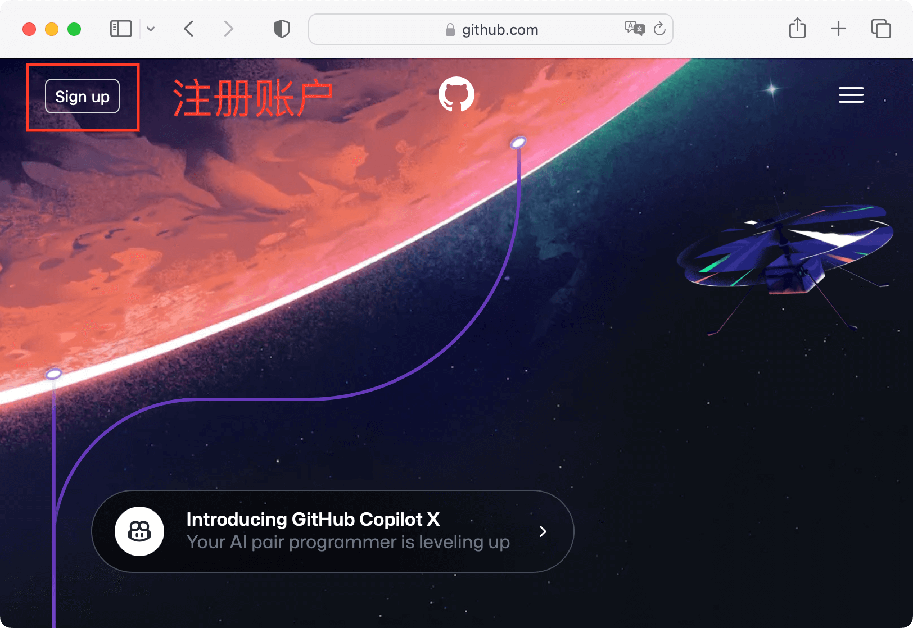
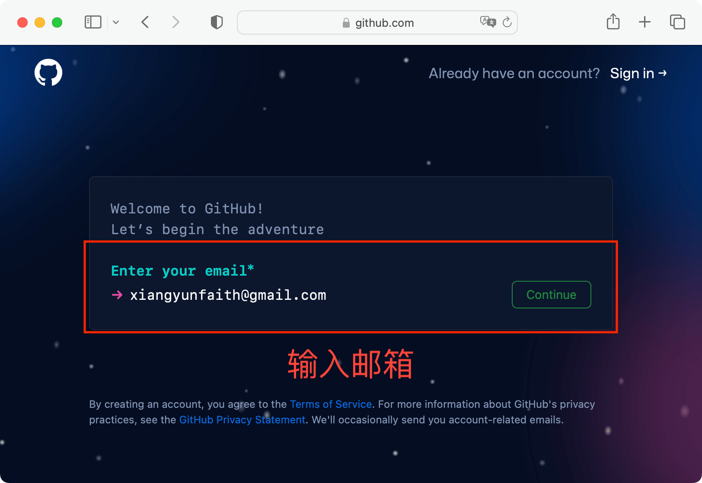
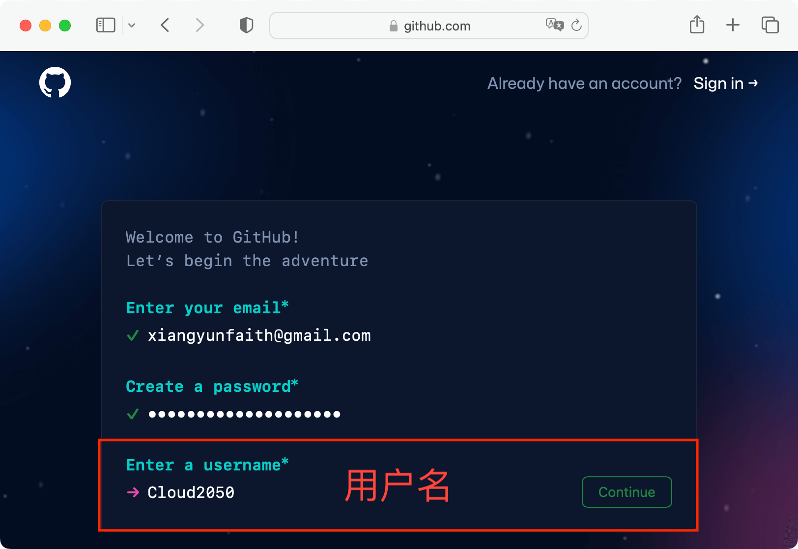
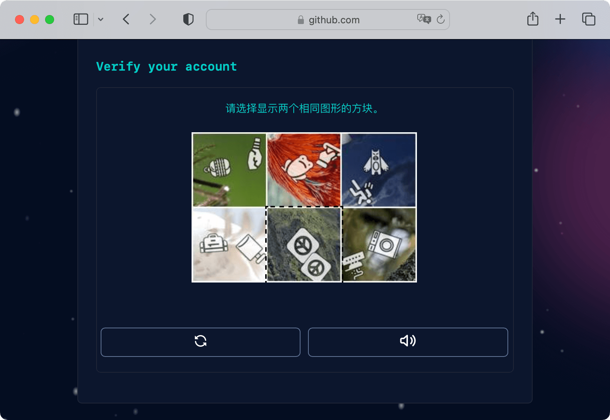
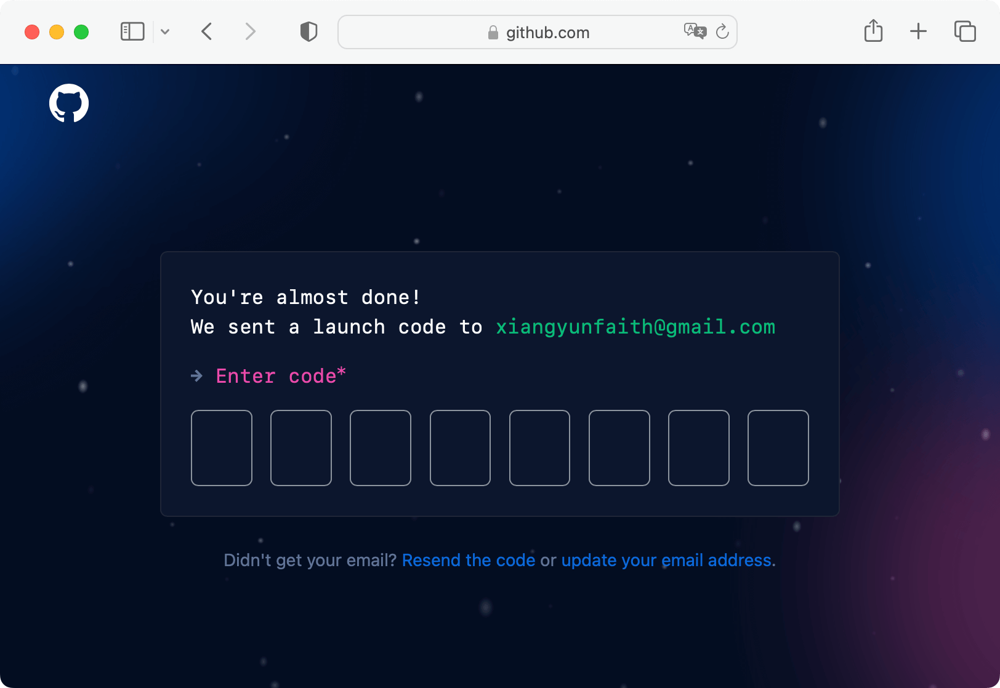
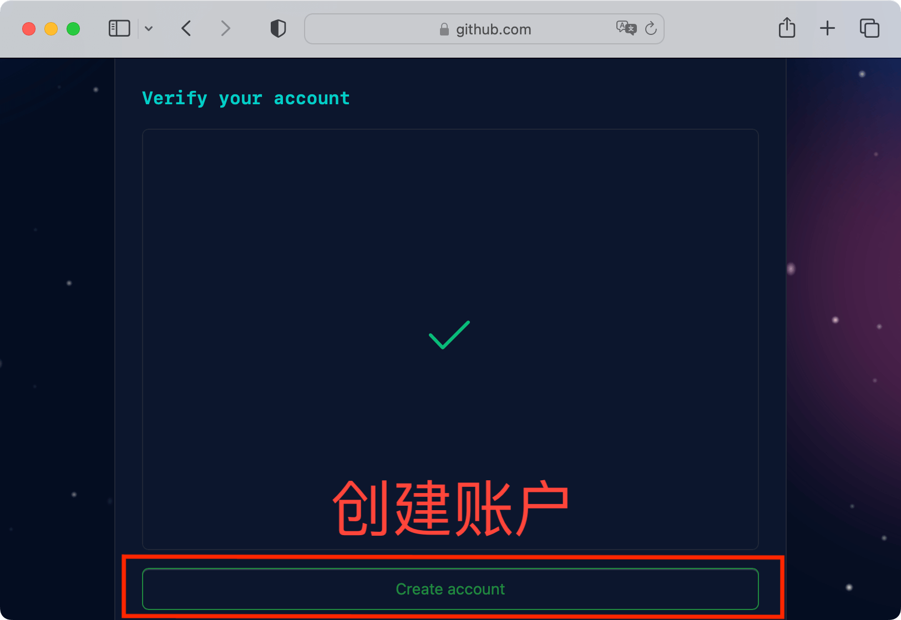
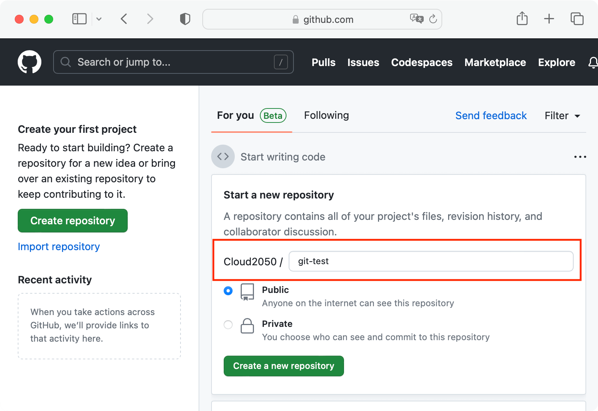

flowchart LR A[创建分支] --> B[修改分支] B --> C[提交分支] C --> D[合并分支] D --> E[删除分支]
附录 C — Git 和 Github
Git 是一个代码、数据和文档的版本管理工具，Github 提供一个用户界面。
C.1 安装配置
C.1.1 创建账户
登陆 Github 官网 (https://github.com/)，点击左上角注册按钮，开始注册 Github 账户。

接着，输入注册用的邮箱地址，比如 Outlook 和 Gmail 等。

除了邮箱外，继续输入密码、用户名等，密码可以选用浏览器自动生成的复杂字符串，只要没有被别人占用，用户名可以按着自己的喜好填写。

接着，系统要验证来注册 Github 账户的人是否是真人。

正确回答界面上出现的问题后，进入下一步，系统会给你之前提供的邮箱发送一个验证码。

将收到的验证码输入进去，完成账户验证。

创建账户后，将自动进入如下界面，接下来，可以创建代码仓库了。

C.1.2 安装 Git
在 MacOS 系统上，系统自带 Git 工具，无需安装。在 Ubuntu 系统上，安装最新稳定版的命令如下：
在 Windows 系统上，安装最新稳定版的命令如下：
C.1.3 配置密钥
在配置 GitHub 账户和安装完 Git 客户端后，接着配置密钥，以便将本地的代码推送到远程 Github 账户下的代码仓库。
C.1.4 (*) 账户共存
在公司往往会有自己的一套代码管理系统，比如 Gitlab 或者某种类似 Gitlab 的工具。本节介绍如何使 Gitlab / Github 账户共存在一台机器上。
如何生成 SSH 密钥见 Github 文档 — 使用 SSH 连接到 GitHub。有了密钥之后只需在目录 ~/.ssh 下创建一个配置文件 config。
Github 对应个人的私有邮箱，Gitlab 对应公司分配的个人邮箱。
生成 SSH Key
ssh-keygen -t rsa -f ~/.ssh/id_rsa_github -C "个人邮箱地址"
ssh-keygen -t rsa -f ~/.ssh/id_rsa_gitlab -C "公司邮箱地址"将 GitHub/GitLab 公钥分别上传至服务器，然后创建配置文件
配置文件内容如下
#
# Github
#
Host github.com // Github 代码仓库的服务器地址
HostName github.com
User XiangyunHuang
IdentityFile ~/.ssh/id_rsa_github
#
# company
#
Host xx.xx.xx.xx // 公司代码仓库的服务器地址
IdentityFile ~/.ssh/id_rsa_gitlab配置成功，你会看到
Welcome to GitLab, xiangyunhuang!和
Hi XiangyunHuang! You've successfully authenticated, but GitHub does not provide shell access.C.2 基本操作
C.2.1 初始化仓库
git init
C.2.2 添加文件
git add
追踪当前目录下的内容
追踪被修改(modified)文件，不包括新添加的文件和被删除(deleted)的文件，-u 是 --update 的缩写
添加所有文件，-A 是 --all 的缩写
C.2.3 记录修改
git commit
git commit -m "添加提交说明"C.2.4 推送修改
git push
git push -u origin masterC.2.5 克隆项目
克隆项目 git clone
有的项目包含子模块，添加选项 --recursive 可以将子模块也克隆下来。
C.3 分支操作
对每一个新的问题，创建新的分支，提交新的 PR。
与人协作开发代码项目，往往涉及 Git 分支操作。通常有两个场景，其一是独立地在分支上进行开发，包含创建分支、修改分支、提交分支、合并分支和删除分支。其二是与人合作互相评审代码修改分支，除了之前的基础操作，还包含在分支上解决代码冲突，同步分支内容。
C.3.1 创建分支
C.3.2 分支切换
C.3.3 修改 PR
C.3.4 (*) 创建 gh-pages 分支
基于 GitHub Pages 创建站点用于存放图片和数据。
- 在 Github 上创建一个空的仓库，命名为 uploads。
- 在本地创建目录 uploads。
- 切换到 uploads 目录下，执行如下命令。
git init
git checkout -b gh-pages
git remote add origin https://github.com/XiangyunHuang/uploads.git添加图片或者数据，并推送到 gh-pages 分支。
这样仓库 uploads 只包含 gh-pages 分支，README.md 文件地址为
C.4 R 与 Git 交互
usethis 包将 Git 操作封装了，特别是一些复杂的操作，比如修改他人的 PR
C.4.1 从 R 操作 Git
拉取编号为 1019 的 PR
1019 是 PR 的编号，修改完，清理
C.4.2 分析 Git 记录
给我的仓库点赞的人有哪些，如果有很多，仅显示第一页。
library(gh)
my_repos <- gh("GET /repos/:owner/:repo/stargazers",
owner = "XiangyunHuang", page = 1,
repo = "data-analysis-in-action")
vapply(my_repos, "[[", "", "login")Jeroen Ooms 开发的 gert 包，提供了 git_rm()、 git_status()、 git_add() 和 git_commit() 等函数，其中包含 git_reset() 、git_branch_*() 等高级 Git 操作。查看最近的 5 条提交记录。
更多内容，读者请看 Gert: A minimal git client for R。
git2r 包对 Git 仓库进行概要。
gitdown 包将 Git 提交日志转化为 GitBook
截止 2023 年 6 月 1 日，统计之都的主站仓库，提交量最大的 10 个人。
153 Dawei Lang
127 Yihui Xie
101 Ryan Feng Lin
93 Beilei Bian
65 Xiangyun Huang
46 王佳
42 雷博文
39 Miao YU
35 xiangyun
32 fanchaoC.5 (*) 辅助工具
Git 扩展 git-delta 和 tig 是两款辅助工具。 tig 用于查看提交的历史日志。
C.5.1 语法高亮
git-delta
对 git diff 的输出提供语法高亮
C.5.2 文本接口
在 MacOS 上，推荐用 Homebrew 安装
C.5.3 大文件存储
Git Large File Storage (LFS) Git LFS
配置 Git LFS
项目中的大型数据文件